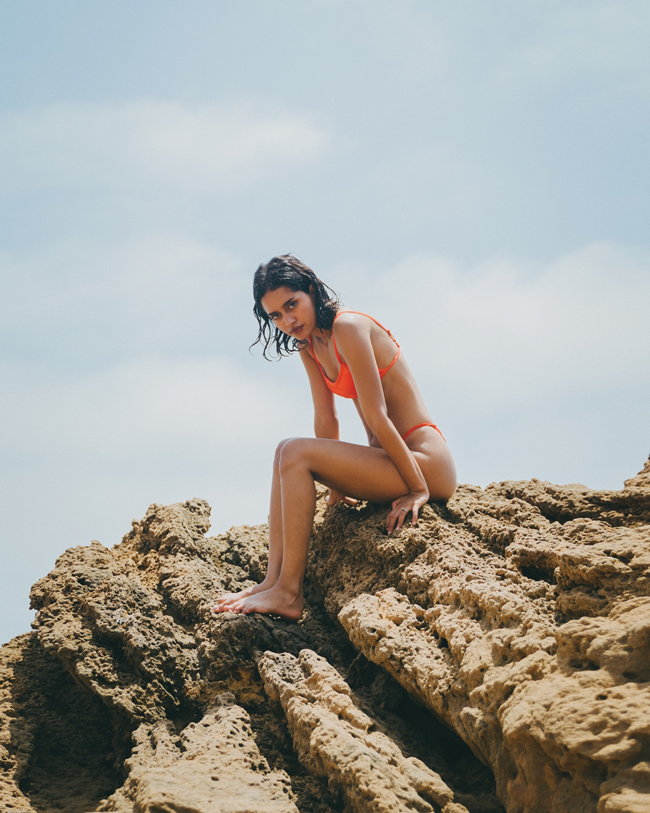
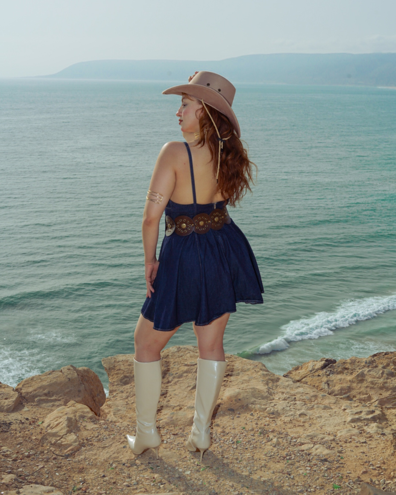
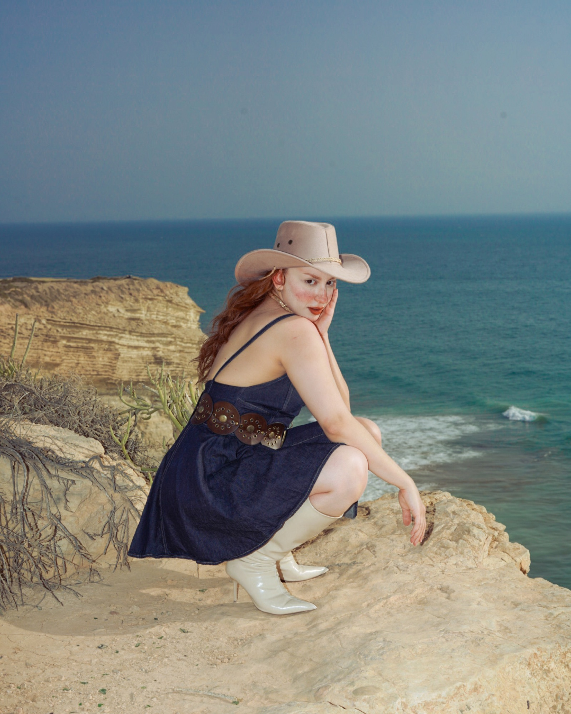
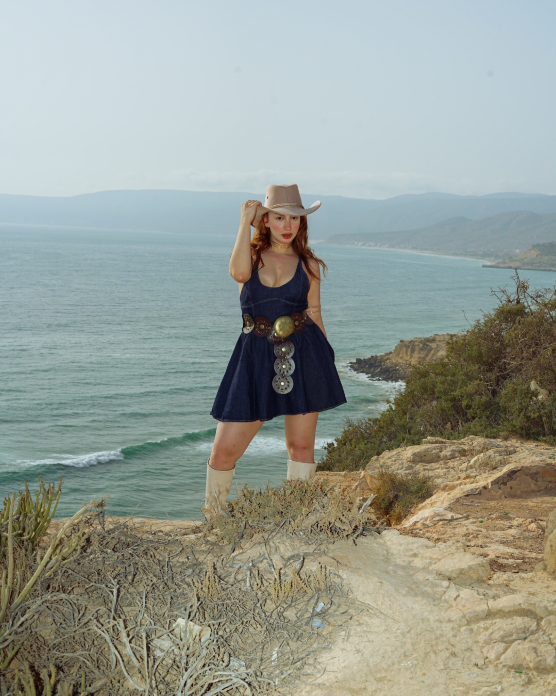

October 9, 2026 — Guide
Portrait Photographer in Taghazout: The Guide

Few places photograph like Taghazout. Golden light on Atlantic waves, volcanic rocks, fishing boats and that laid-back surf-town soul — a portrait photoshoot in Taghazout gives you backdrops you simply can't find anywhere else. Here's everything worth knowing before you book a portrait photographer in Taghazout, from a photographer who shoots here all the time.
The best spots for portraits in Taghazout
The beach & rocks — black volcanic rocks against the ocean: dramatic, natural, timeless. Best at low tide when the rock pools mirror the sky.
The fishing boats — colourful wooden boats pulled up on the sand: pure Morocco, and a backdrop full of character for lifestyle portraits.
Paradise Valley — 30 minutes inland, palm groves and natural pools in the Atlas foothills. A completely different mood, perfect for a second location in the same session.
The village streets — whitewashed walls, surf shops and cafés: relaxed, authentic, and great for candid, editorial-style shots.


Light, timing and what to wear
The Atlantic coast gives soft, flattering light — the golden hours (just after sunrise, just before sunset) are when portraits come alive, with the ocean glowing behind you. Midday sun is strong; a good photographer will work with shade, rocks and angles instead of fighting it.
For outfits: light, flowing fabrics (white, beige, terracotta) move beautifully in the sea breeze and pop against the blue ocean and dark rocks. Swimwear sessions work great here too — bring a second outfit if your session covers two locations.
How a portrait session works
A typical portrait session in Taghazout lasts 1 to 3 hours and covers one or two locations. You don't need modelling experience — a good portrait photographer directs you through natural poses and candid moments, so the session feels like a walk on the beach, not a performance. Edited, high-resolution images are usually delivered within a week.

Book a portrait photographer in Taghazout
I'm Mohamed Lemsayl — portrait photographer based in Agadir, shooting in Taghazout and across Morocco. I shoot modern, natural-light portraits: solo sessions, couples, surf-lifestyle editorials and brand content. You can see the style in my portrait gallery.
Tell me your dates and the mood you're after — I'll suggest the locations and light to match.
Visiting Taghazout? Let's shoot.
Book a portrait session